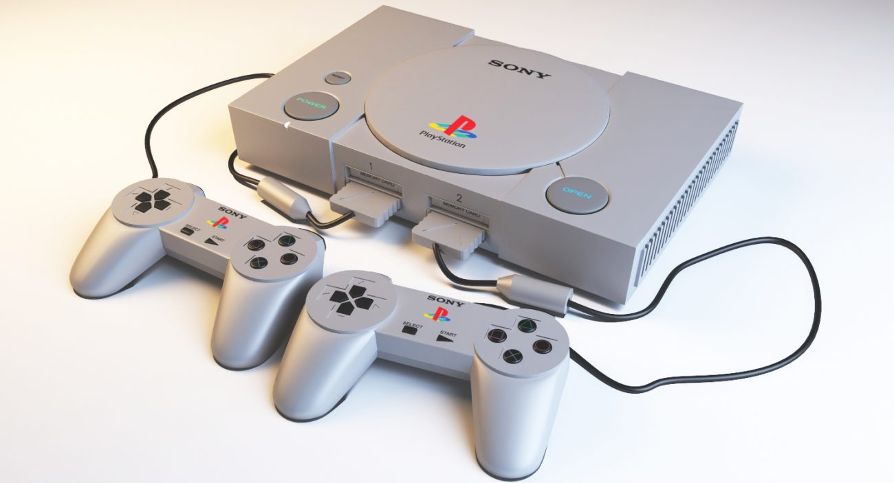
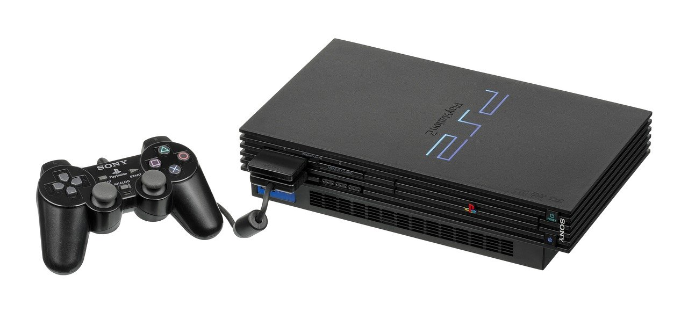
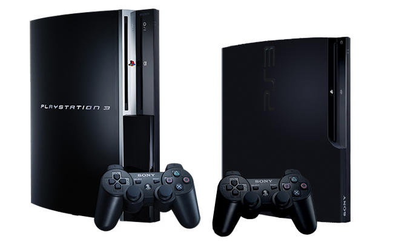
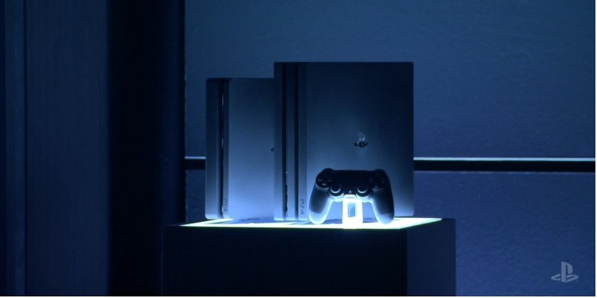
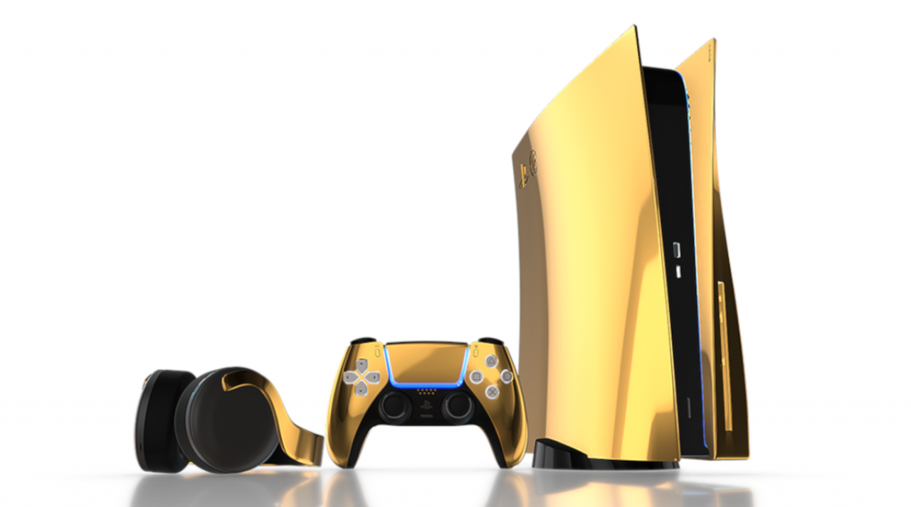

Оглавление:
Sony вышла на рынок приставок в далеком 1994 году. Чтобы заявить о себе, ей необходимо было опередить серьезных конкурентов в лице Sega и Nintendo. В структуре японской компании создали отдельный департамент, занимающийся внедрением передовых технологий в сфере электронных игр.
Прошло более 25 лет, а Sony по-прежнему занимает лидирующие позиции, постоянно совершенствуя графику, производительность, дизайн. Абсолютно все версии ее консолей стали топовыми. Итак, история развития знаменитой народной приставки:
Первое поколение PlayStation (PS1)
Главный создатель приставки — Кен Кутараги, руководивший командой разработчиков. Именно он придумал название устройства и добился того, что направление не было свернуто. 3 декабря 1994 г. Sony представила в Японии принципиально новый продукт: игровую консоль с поддержкой CD-дисков.
Приставка быстро приобрела популярность: пользователям пришлась по вкусу трехмерная графика и качественный звук. Теперь им не нужно было запоминать место, на котором они остановились: благодаря использованию карт памяти на 128 Кб появилась возможность сохраниться и продолжить игру позже.
PlayStation 1 изначально задумывалась прежде всего как образовательный проект, специалисты компании готовили для аппаратуры тесты, задачи, лекции, но оказалось, что в играх ей нет равных. Благодаря этому факту по всему миру реализовано более 102 млн. устройств.
В 1998 году была выпущена мини-консоль PocketStation с жидкокристаллическим дисплеем.
PlayStation 2 — самая продаваемая приставка в мире (PS2)
В Японии гаджет стал доступен к началу марта 2000 года, осенью — на рынках других стран. Продажи PlayStation 2 превзошли все ожидания: по состоянию на 3 квартал 2011 года было распродано 155 млн. штук.
Революционное устройство поддерживало CD и DVD-диски, а также на нем запускались старые и уже полюбившиеся игры. Из новинок: реалистичная 3D-графика, встроенный плеер для фильмов и аудиофайлов.
Консоль оснащена оперативной памятью 32 Мб, и двумя контроллерами с системой dualshock. При стрельбе и взрывах контроллер начинал вибрировать.
Версия Slim, выпускавшаяся с 2007 года, позволяла играть с другими пользователями в сети, подключать фотоаппараты и камеры через USB-порт.
PlayStation 3: в шаге от совершенства (PS3)
Устройство появилось на рынке Японии в 2006 году, порадовав поклонников инновационными фишками. Позже покупателям представили еще две оригинальные модификации PS3 Slim (2009 г.) и Super Slim (2012 г.). Технические характеристики консолей почти идентичны, они отличаются лишь толщиной и размерами.
Технические характеристики консоли PS 3:
- 8-ядерный процессор Cell 3,2 ГГц.
- За графику отвечает видеокарта с процессором RSX от Nvidia с 256 Мб видеопамяти.
- Оперативная память: 256 Мб XDR DRAM.
- Жесткий диск: в зависимости от конфигурации, 20 GB, 60 GB, и 80 GB.
- Приводы: Blu-Ray.
Приставки этого поколения подключаются к интернету, а изображение выводится на монитор или экран телевизора. Данные загружаются в том числе и с внешних носителей. Контроллер оснащен дополнительным устройством для распознавания жестов PS Move.
Главное преимущество PS3 — высокая разрешающая способность. Объем оперативной памяти был расширен до 256 МБ. Сердце устройства — 8-ядерный процессор, работающий на высокой тактовой частоте 3,2 ГГц.
Всего было продано 84 млн. экземпляров консоли, которые популярны и сейчас благодаря весьма неплохой “начинке”.
PlayStation 4: почти компьютер (PS4)
Пока последнее на сегодня поколение приставки увидело свет в 2013 году. Разработчики установили на нее операционную систему Orbis, и “железо”, которое максимально приблизило устройство к функционалу ПК.
Технические характеристики консоли PS 4:
- Специальный 8-ядерный процессор x86-64 AMD Jaguar.
- Графика: AMD Radeon™ производительностью 1.84 Терафлопс.
- Оперативная память приставки — рекордные 8 ГБ GDDR5. Кроме беспроводного модуля WI-FI имеется Bluetooth.
- Жесткий диск зависит от конфигурации, выпускаются 2 версии: на 500 Гб и 1 Тб.
- Вес: примерно 2.1 кг.
- Приводы: Blu-Ray, DVD.
- Разъемы: HDMI, USB x2, Ethernet, Bluetooth® 4.0.
- Размеры: 265?39?288 мм.
В 2016 в свет вышли версии Slim и Pro.
Эта фантастическая консоль способна выдавать картинку с разрешением в 4к, отличающуюся улучшенной детализацией. Вариант Pro обзавелся еще более мощным графическим процессором, на геймпаде появилась кнопка для сохранения скриншотов и игрового видео, которыми можно делиться с друзьями.
Быстрое меню теперь можно вызвать на экран в любой момент, не отрываясь от прохождения уровня. Через него запускается проигрывание музыки, осуществляется вход в чат и т. д.
Что известно о PlayStation 5 (PS5)?
Ориентировочный срок выхода новинки — 2020 или 2021 год. Технические характеристики устройства держат в секрете, но кое-какая инсайдерская информация все же просочилась в интернет. Приставка получит улучшенный процессор, сверхбыструю оперативку 32 ГБ, и аудиосистему с эффектом объемного звука. Консоль будет совместима с очками виртуальной реальности. Приставка получит улучшенный процессор, сверхбыструю оперативку 32 ГБ, и аудиосистему с эффектом объемного звука. Консоль будет совместима с очками виртуальной реальности.
Интересные факты о приставке Sony PlayStation:
Знаменитые консоли отмечены многочисленными наградами, они стали лучшим подарком и для детей, и для взрослых. Если вспомнить историю развития гаджетов, можно найти немало моментов, заинтригующих не только активных геймеров:
- компания Sony продала 450 млн. единиц консолей всех поколений за период с 1994 по 2019 гг. Это достижение попало в Книгу рекордов Гиннеса;
- в PS2качество жестких дисков (продавались отдельно) оставляло желать лучшего. Ошибки считывания приводили к повреждению игр и самого накопителя. Производителю пришлось возмещать средства на ремонт и платить пользователям компенсации, чтобы не разочаровать их;
- самой популярной игрой среди владельцев приставок PlayStation является “GTA: San Andreas” в жанре Action-adventure. Только для SP2 продано 17 млн. копий;
- в 2000 году CNN и другие крупные агентства новостей на полном серьезе распространяли “сенсацию” о создании Саддамом Хусейном из тысяч приставок Sony мощного оружия, пригодного для наведения баллистических ракет. Японии даже пришлось временно вводить ограничения на экспорт, пока не выяснилось, что информация не отвечает действительности. Некоторые обвиняли в распространении фейка Sony, которая таким образом хотела добавить продукту популярности;
- астрофизик из Массачусетского университета Гуарав Ханна сделал из 16 консолей SP3 суперкомпьютер для исследования черных дыр;
- Приводы: Blu-Ray, DVD.
- Video Unlimited в SP4 впервые позволяет транслировать фильмы в режиме реального времени;
- PS4 — самая мощная и одновременно самая легкая игровая приставка. Вес контроллера — 210 г., основного устройства — 2,8 кг.;
- среди пользователей PlayStation 22% без особого труда могут просидеть за играми более 10 часов, 38% — до 10 часов. Лишь 6% уделяют виртуальному миру не более 3 часов подряд; около 40% фанатов консолей PlayStation готовы отказаться от отношений с людьми, не разделяющими их увлечения.